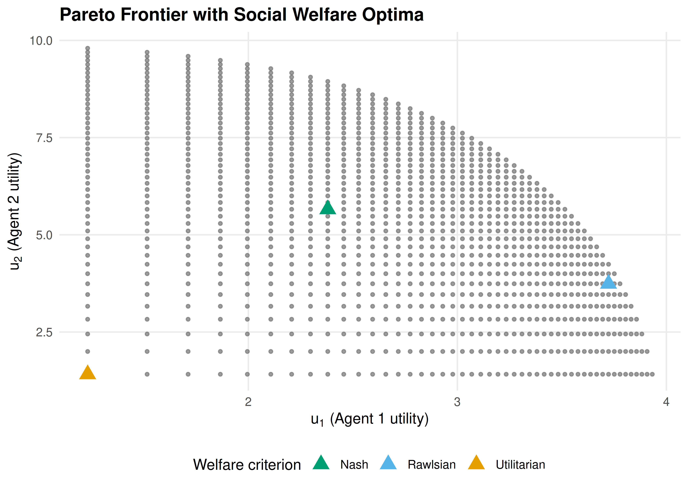
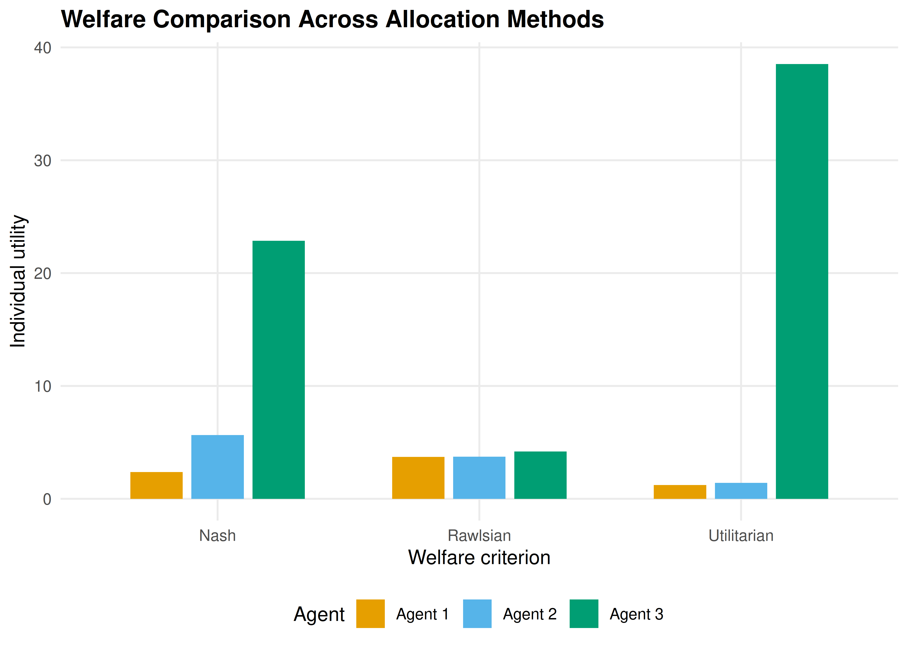

38 Ethical Frameworks for Strategic AI
Consequentialism, deontology, and virtue ethics applied to AI decisions, with formal social welfare functions for resource allocation.
Learning objectives
- Distinguish consequentialist, deontological, and virtue-ethics perspectives on strategic AI decisions.
- Formalize utilitarian, Rawlsian, and Nash social welfare functions and compute their optima.
- Implement and compare welfare criteria for multi-agent resource allocation in R.
- Identify Pareto-efficient allocations and locate welfare-maximizing points on the Pareto frontier.
38.1 Motivation
An autonomous system must allocate a scarce resource — say, bandwidth, computing capacity, or medical supplies — among multiple agents. A purely strategic analysis tells us what equilibrium outcomes look like, but it says nothing about which equilibrium is desirable. Should we maximize total benefit (utilitarianism)? Protect the worst-off agent (Rawlsian maximin)? Find a balanced compromise (Nash bargaining)?
These questions are not merely philosophical. Every multi-agent system that resolves conflicts among stakeholders implicitly embeds an ethical framework in its objective function. Making the framework explicit allows designers to reason about trade-offs, justify choices, and audit outcomes.
38.2 Theory
38.2.1 Three ethical lenses
Consequentialism evaluates actions by their outcomes. In a game-theoretic setting, the most common consequentialist criterion is utilitarianism: choose the outcome that maximizes the sum of payoffs across all agents.
Deontology evaluates actions by whether they conform to rules or duties, regardless of consequences. In mechanism design this corresponds to constraints — for example, requiring that no agent is made worse off than their outside option (individual rationality) or that the mechanism treats agents symmetrically.
Virtue ethics asks what a well-functioning agent would do. In AI alignment, this maps to designing agents that exhibit desirable dispositions — honesty, fairness, cooperativeness — as stable character traits rather than case-by-case calculations.
38.2.3 Impossibility and trade-offs
Arrow’s impossibility theorem and its descendants show that no social welfare function can satisfy all desirable axioms simultaneously. In practice, the choice of SWF reflects a value judgement about how to weigh efficiency against equity. Utilitarianism favours efficiency, the Rawlsian criterion favours equity, and the Nash criterion offers a middle ground that is scale-invariant and satisfies the axioms of Nash bargaining.
38.3 Implementation in R
We consider a resource allocation problem: divide a budget \(B = 100\) among three agents whose utilities are concave functions of their share.
# Agent utility functions (concave — diminishing returns)
utility <- function(x, alpha) {
# CES-style utility: x^alpha, alpha in (0, 1) gives concavity
x^alpha
}
# Agent parameters: different elasticities
alphas <- c(0.3, 0.5, 0.8)
budget <- 100
n_agents <- 3
# Social welfare functions
swf_utilitarian <- function(alloc, alphas) {
sum(mapply(utility, alloc, alphas))
}
swf_rawlsian <- function(alloc, alphas) {
min(mapply(utility, alloc, alphas))
}
swf_nash <- function(alloc, alphas) {
utils <- mapply(utility, alloc, alphas)
if (any(utils <= 0)) return(0)
prod(utils)
}38.3.1 Grid search over allocations
# Generate feasible allocations on a grid (x1 + x2 + x3 = budget)
step <- 2
grid <- expand.grid(
x1 = seq(step, budget - 2 * step, by = step),
x2 = seq(step, budget - 2 * step, by = step)
) |>
mutate(x3 = budget - x1 - x2) |>
filter(x3 >= step)
# Compute utilities and welfare for each allocation
results <- grid |>
rowwise() |>
mutate(
u1 = utility(x1, alphas[1]),
u2 = utility(x2, alphas[2]),
u3 = utility(x3, alphas[3]),
W_util = u1 + u2 + u3,
W_rawls = min(u1, u2, u3),
W_nash = u1 * u2 * u3
) |>
ungroup()
# Find optima
opt_util <- results |> slice_max(W_util, n = 1, with_ties = FALSE)
opt_rawls <- results |> slice_max(W_rawls, n = 1, with_ties = FALSE)
opt_nash <- results |> slice_max(W_nash, n = 1, with_ties = FALSE)
cat("Utilitarian optimum: x =", c(opt_util$x1, opt_util$x2, opt_util$x3), "\n")#> Utilitarian optimum: x = 2 2 96#> Rawlsian optimum: x = 80 14 6#> Nash optimum: x = 18 32 5038.3.2 Pareto frontier with welfare optima
# Identify Pareto-efficient allocations (no other allocation dominates)
is_dominated <- function(i, df) {
u <- c(df$u1[i], df$u2[i], df$u3[i])
any(
df$u1 >= u[1] & df$u2 >= u[2] & df$u3 >= u[3] &
(df$u1 > u[1] | df$u2 > u[2] | df$u3 > u[3])
)
}
pareto_mask <- !sapply(seq_len(nrow(results)), is_dominated, df = results)
pareto <- results[pareto_mask, ]
optima_points <- bind_rows(
opt_util |> mutate(criterion = "Utilitarian"),
opt_rawls |> mutate(criterion = "Rawlsian"),
opt_nash |> mutate(criterion = "Nash")
)
p1 <- ggplot() +
geom_point(data = results, aes(x = u1, y = u2),
colour = "grey80", size = 0.5, alpha = 0.3) +
geom_point(data = pareto, aes(x = u1, y = u2),
colour = "grey40", size = 1, alpha = 0.6) +
geom_point(data = optima_points, aes(x = u1, y = u2, colour = criterion),
size = 4, shape = 17) +
scale_colour_manual(
values = c("Utilitarian" = okabe_ito[1],
"Rawlsian" = okabe_ito[2],
"Nash" = okabe_ito[3]),
name = "Welfare criterion"
) +
labs(
title = "Pareto Frontier with Social Welfare Optima",
x = expression(u[1] ~ "(Agent 1 utility)"),
y = expression(u[2] ~ "(Agent 2 utility)")
) +
theme_publication()
p1
Figure 38.1: Pareto frontier projected onto agents 1 and 2 utility space. The utilitarian (orange), Rawlsian (blue), and Nash (green) optima select different points on the frontier, reflecting different equity-efficiency trade-offs.
save_pub_fig(p1, "ethics-pareto-frontier", width = 7, height = 5)38.3.3 Welfare comparison across methods
comparison <- optima_points |>
select(criterion, u1, u2, u3) |>
pivot_longer(cols = c(u1, u2, u3),
names_to = "agent", values_to = "utility") |>
mutate(agent = recode(agent, u1 = "Agent 1", u2 = "Agent 2", u3 = "Agent 3"))
p2 <- ggplot(comparison, aes(x = criterion, y = utility, fill = agent)) +
geom_col(position = position_dodge(width = 0.7), width = 0.6) +
scale_fill_manual(
values = c("Agent 1" = okabe_ito[1],
"Agent 2" = okabe_ito[2],
"Agent 3" = okabe_ito[3]),
name = "Agent"
) +
labs(
title = "Welfare Comparison Across Allocation Methods",
x = "Welfare criterion",
y = "Individual utility"
) +
theme_publication()
p2
Figure 33.1: Individual agent utilities under each welfare criterion. The utilitarian optimum concentrates resources on the agent with highest marginal utility (agent 3), while the Rawlsian criterion equalizes utilities across agents.
save_pub_fig(p2, "ethics-welfare-comparison", width = 7, height = 5)38.4 Worked example
Consider three agents sharing a budget of \(B = 100\) with utility functions \(u_i(x_i) = x_i^{\alpha_i}\) where \(\alpha_1 = 0.3\), \(\alpha_2 = 0.5\), and \(\alpha_3 = 0.8\). Agent 3 has the highest elasticity — each additional unit of resource generates more utility for agent 3 than for the others.
Step 1 — Utilitarian optimum. The utilitarian criterion maximizes \(\sum u_i\). Because agent 3’s marginal utility decreases most slowly (\(\alpha_3 = 0.8\)), the utilitarian solution allocates the most resources to agent 3.
cat("=== Worked Example: 3-Agent Resource Allocation ===\n\n")#> === Worked Example: 3-Agent Resource Allocation ===
cat("Agent parameters (alpha):", alphas, "\n")#> Agent parameters (alpha): 0.3 0.5 0.8
cat("Budget:", budget, "\n\n")#> Budget: 100
# Report allocations and utilities for each criterion
for (lbl in c("Utilitarian", "Rawlsian", "Nash")) {
row <- optima_points |> filter(criterion == lbl)
cat(sprintf("%s optimum:\n", lbl))
cat(sprintf(" Allocation: (%.0f, %.0f, %.0f)\n", row$x1, row$x2, row$x3))
cat(sprintf(" Utilities: (%.3f, %.3f, %.3f)\n", row$u1, row$u2, row$u3))
cat(sprintf(" Sum: %.3f | Min: %.3f | Product: %.3f\n\n",
row$u1 + row$u2 + row$u3,
min(row$u1, row$u2, row$u3),
row$u1 * row$u2 * row$u3))
}#> Utilitarian optimum:
#> Allocation: (2, 2, 96)
#> Utilities: (1.231, 1.414, 38.532)
#> Sum: 41.177 | Min: 1.231 | Product: 67.087
#>
#> Rawlsian optimum:
#> Allocation: (80, 14, 6)
#> Utilities: (3.723, 3.742, 4.193)
#> Sum: 11.658 | Min: 3.723 | Product: 58.413
#>
#> Nash optimum:
#> Allocation: (18, 32, 50)
#> Utilities: (2.380, 5.657, 22.865)
#> Sum: 30.902 | Min: 2.380 | Product: 307.845Step 2 — Rawlsian optimum. The maximin criterion equalizes utilities as much as possible. Because agent 1 has the most concave utility function, it requires a larger share of the budget to achieve the same utility as the others.
Step 3 — Nash optimum. The Nash product criterion finds a middle ground. It is the unique allocation satisfying the axioms of symmetry, Pareto efficiency, independence of irrelevant alternatives, and scale invariance from Nash’s bargaining theory.
Interpretation. The three criteria represent genuine ethical disagreements. A designer choosing among them is making a normative choice: how much inequality is acceptable in exchange for higher total welfare? There is no objectively correct answer, but formalizing the alternatives allows transparent discussion and principled selection.
38.5 Extensions
- Weighted welfare functions. Assign different weights \(w_i\) to agents: \(W_U(x) = \sum w_i u_i(x)\). This can represent priority given to disadvantaged groups or domain-specific considerations.
- Mechanism design (33) connects welfare functions to incentive-compatible mechanisms: can we design rules that achieve a desired welfare criterion even when agents act strategically?
- Fairness in ML (39) applies similar trade-offs to machine learning classifiers, where “agents” are demographic groups and “utility” is prediction accuracy.
- For philosophical foundations, see Sen (1999) and Rawls (1971). For the game-theoretic connection, Moulin (2004) provides an axiomatic treatment of fair division.
Exercises
Weighted utilitarianism. Modify the grid search to maximize \(W(x) = 2 u_1(x) + u_2(x) + u_3(x)\), giving agent 1 double weight. How does the optimal allocation change compared to equal-weight utilitarianism? Plot the result on the Pareto frontier.
Four agents. Extend the implementation to four agents with \(\alpha = (0.2, 0.4, 0.6, 0.9)\) and budget \(B = 200\). Compare the utilitarian and Rawlsian allocations. Which agent gains the most from switching to the Rawlsian criterion?
Leximin refinement. The Rawlsian criterion only considers the worst-off agent. Implement the leximin refinement, which first maximizes the minimum utility, then (among allocations achieving this maximum) maximizes the second-lowest utility, and so on. Does leximin ever differ from plain maximin in the three-agent example?
Solutions appear in D.
38.2.2 Social welfare functions
Given \(n\) agents with utilities \(u_1, u_2, \ldots, u_n\) over an allocation \(x\), we define three standard social welfare functions (SWFs):
Utilitarian SWF — maximize total welfare: \[\begin{equation} W_U(x) = \sum_{i=1}^{n} u_i(x) \tag{38.1} \end{equation}\]
Rawlsian (maximin) SWF — maximize the welfare of the worst-off agent: \[\begin{equation} W_R(x) = \min_{i} \; u_i(x) \tag{38.2} \end{equation}\]
Nash SWF — maximize the product of utilities (equivalent to Nash bargaining with equal bargaining power): \[\begin{equation} W_N(x) = \prod_{i=1}^{n} u_i(x) \tag{38.3} \end{equation}\]
Pareto efficiency
An allocation \(x\) is Pareto efficient if there is no alternative \(x'\) such that \(u_i(x') \geq u_i(x)\) for all \(i\) with strict inequality for at least one. All three SWF optima lie on the Pareto frontier, but they generally select different points.